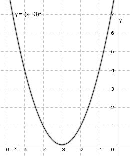

Aufgabe 60 Ermitteln Sie aus der Wertetabelle die zu einer quadratischen Funktion gehörige Funktionsgleichung: x -5 -4 -3 -2 -1 0 y 4 1 0 1 4 9 Der Punkt (-3|0) ist der tiefste Punkt der Parabel, ihr Scheitelpunkt. Verändert man x um eine Einheit nach links oder rechts (-4 oder –2) wird y um 1 größer. Verändert man x um 2 Einheiten nach links oder rechts (-5 oder –1) wird y um 4 größer. Dieses Verhalten gilt für die Normalparabel. Bei der angegebenen Parabel handelt es sich um eine verschobene Normalparabel. Allgemeine Form einer verschobenen Normalparabel: y = x2 + bx + c Punktkoordinaten (-3|0) und (0|9) eingesetzt : 0 = (-3)2 - 3b + c 0 = 9 – 3b + c |-9 -3b + c = -9 (1) und 9 = 02 + 0b + c c = 9 In (1) eingesetzt: -3b + 9 = -9 |-9 -3b = -18 | :(-3) b = 6 Gesuchte Funktionsgleichung: y = x2 + 6x + 9 oder Liegt der Scheitelpunkt einer verschobenen Normalparabel auf der x-Achse gilt, mit xS = -3: y = (x – xS)² y = (x – (-3))2 = (x + 3)2 y = x2 + 6x + 9 